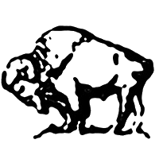

Bison is a landcape architecture plugin
for Grasshopper + Rhino 6. It features tools for terrain mesh creation, analysis, editing, and annotation.
It is currently in beta and available for academic and commercial use.
Download:
Release v0.9 Expires 07/01/2018